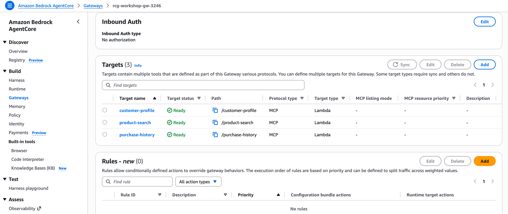
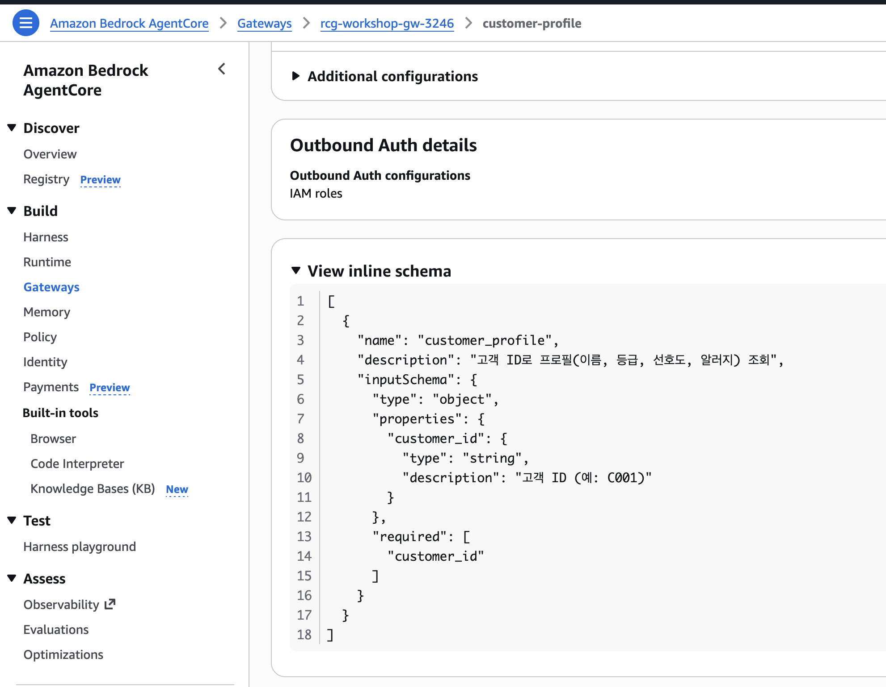

Step 1: Gateway 생성 & Tool 등록 ⏱️ 10분 ★☆☆¶
이 Step의 목표
사전 배포된 Lambda 함수를 AgentCore Gateway에 MCP Tool로 등록합니다.
이후 Agent는 이 Gateway를 통해 Tool을 호출합니다.
Gateway란?¶
Gateway의 가치:
- Agent 코드에 Lambda ARN을 하드코딩하지 않음
- Tool 추가/변경 시 Agent 재배포 불필요
- MCP 프로토콜로 표준화된 Tool 호출
- 인증/인가를 Gateway 레벨에서 처리
1-1. Gateway 생성 스크립트 실행¶
스크립트가 하는 일 (내부)
# 1. Gateway 생성
client.create_gateway(
name="rcg-workshop-gw-XXXX",
protocolType="MCP",
roleArn=ROLE_ARN,
)
# 2. Lambda를 Gateway Target으로 등록
client.create_gateway_target(
gatewayIdentifier=gateway_id,
name="customer-profile",
targetConfiguration={
"mcp": {
"lambda": {
"lambdaArn": lambda_arn,
"toolSchema": {"inlinePayload": tool_schema}
}
}
},
)
1-2. 결과 확인¶
스크립트가 출력하는 정보를 확인하세요:
🎉 Gateway 설정 완료!
Gateway ID: gw-abc123def456
Gateway URL: https://gw-abc123def456.gateway.agentcore.us-east-1.amazonaws.com
export AGENTCORE_GATEWAY_URL=https://gw-abc123...
1-3. Tool 등록 확인¶
aws bedrock-agentcore-control list-gateway-targets \
--gateway-identifier "$GATEWAY_ID" \
--query 'items[].[name, status]' --output table
정상 출력
1-4. 우리가 만든 것 확인하기¶
Console에서 확인¶
AWS Console에서 방금 생성한 Gateway를 확인해봅니다:
Console → Amazon Bedrock → AgentCore → Gateways →
rcg-workshop-gw-XXXX클릭

3개 Target이 모두 Ready 상태이면 정상입니다.
지금까지 만든 것의 의미¶
방금 여러분은 Lambda 함수 3개를 MCP 프로토콜의 Tool로 변환했습니다. 이게 왜 중요할까요?
graph LR
subgraph BEFORE["❌ 기존 방식"]
A1["Agent 코드"] -->|"하드코딩"| L1["Lambda ARN #1"]
A1 -->|"하드코딩"| L2["Lambda ARN #2"]
A1 -->|"하드코딩"| L3["Lambda ARN #3"]
end
subgraph AFTER["✅ Gateway 방식 (지금)"]
A2["Agent 코드"] -->|"MCP"| GW["Gateway URL 1개"]
GW --> T1["customer-profile"]
GW --> T2["product-search"]
GW --> T3["purchase-history"]
end
style BEFORE fill:#ffebee,stroke:#c62828
style AFTER fill:#e8f5e9,stroke:#2e7d32| 비교 | 하드코딩 방식 | Gateway 방식 (우리가 만든 것) |
|---|---|---|
| Tool 추가 | Agent 코드 수정 + 재배포 | Gateway에 Target 추가만 |
| Agent가 아는 것 | Lambda ARN 직접 알아야 함 | Gateway URL 1개만 알면 됨 |
| Tool 설명 | 코드에 주석으로 관리 | Schema의 description으로 표준화 |
| 인증 | 각 Lambda별 권한 설정 | Gateway가 일괄 처리 |
Agent가 보는 Tool Schema¶
Agent(LLM)는 Lambda가 뭔지 모릅니다. 오직 Tool Schema의 description만 읽고 판단합니다:
| Tool 이름 | Agent가 읽는 설명 | 파라미터 |
|---|---|---|
customer_profile |
"고객 ID로 프로필(이름, 등급, 선호도, 알러지) 조회" | customer_id (string) |
product_search |
"카테고리와 태그로 상품 검색. 재고 있는 상품만 반환" | category, tags (string) |
purchase_history |
"고객의 최근 구매 이력 조회. 중복 추천 방지용" | customer_id (string) |
Tool Schema의 description = Agent의 판단 기준
Agent(LLM)는 사용자 질문을 받으면 이 description을 읽고 어떤 Tool을 어떤 순서로 호출할지 스스로 결정합니다.
예: "견과류 알러지가 있는 고객에게 추천해줘"
→ Agent 판단: "알러지 확인이 필요하니 customer_profile을 먼저 호출하자"
description이 모호하면 Agent가 잘못된 시점에 호출합니다. 이것이 Prompt Engineering 못지않게 중요한 Tool Schema Engineering입니다.
Tool Schema = Agent의 "설명서"¶
Console에서 Target을 클릭하면 inline schema를 확인할 수 있습니다:

이 JSON이 Agent(LLM)가 실제로 읽는 전부입니다:
{
"name": "customer_profile",
"description": "고객 ID로 프로필(이름, 등급, 선호도, 알러지) 조회",
"inputSchema": {
"properties": {
"customer_id": {
"type": "string",
"description": "고객 ID (예: C001)"
}
}
}
}
description이 Agent 성능을 결정합니다
Agent(LLM)는 Lambda 코드를 볼 수 없습니다. 오직 description만 읽고 이 Tool을 언제 호출할지 판단합니다.
| description 품질 | Agent 행동 |
|---|---|
| "고객 프로필 조회" (모호) | 언제 호출할지 헷갈림 → 불필요한 호출 증가 |
| "고객 ID로 프로필(알러지, 선호도) 조회" (구체적) | 알러지 질문이 오면 즉시 호출 |
이것이 Prompt Engineering 못지않게 중요한 Tool Schema Engineering입니다.
Step 1 요약: 우리가 완성한 것¶
AgentCore Gateway (rcg-workshop-gw-XXXX)
Lambda → MCP Tool
Lambda → MCP Tool
Lambda → MCP Tool
⬆️ Agent는 Gateway URL 1개로 3개 Tool 모두 접근
(Agent 코드에 Lambda ARN 없음!)
- Gateway = Lambda를 MCP Tool로 변환하는 라우터
- Tool Schema = Agent에게 "이 Tool은 이렇게 쓰는 것"을 알려주는 설명서
- Agent는 Gateway URL만 알면 됨 (Lambda ARN 몰라도 됨)
다음
Gateway 준비 완료! 이제 이 Gateway를 사용하는 Agent의 두뇌를 만듭니다. → Step 2: Agent 코드 작성